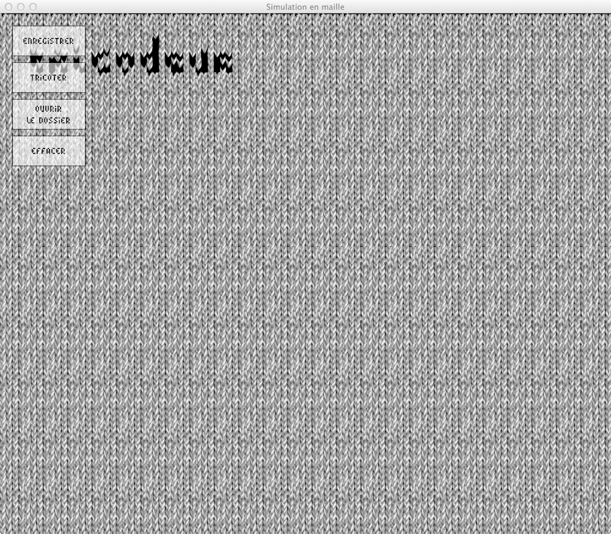

Créer puis tricoter des visualisations de données personnelles expressives et esthétiques. Explorer l'interaction entre la maille et le numérique pour la réappropriation des informations dématérialisées.
Les programmes et les objets qui nous enregistrent à chaque instant ont envahi notre quotidien : profils facebook débordant de données privées, historique des recherches Google capturées à notre insu, portables et bracelets connectés enregistrant notre activité physique, notre position géographique, nos métadonnées de communication téléphoniques, etc. Ces informations sont convoitées par un grand nombre d'acteurs économiques et institutionnels mais ne sont que trop rarement récupérées et explorées par les citoyens qu'elles concernent et qui en sont les auteurs. Pourtant, ce travail de découverte et de réflexion à la fois instructif et introspectif permet de mieux comprendre la valeur de ces données et la nécessité de garder le contrôle sur elles. Il est important de créer les outils qui permettront de les percevoir, de les manipuler et d'appréhender ce qu'elle peuvent révéler de nous.
L'enjeu de ce workshop est de mettre en place des visualisation de données issues de jeux de données personnelles fournis par les participants eux-mêmes (profil Facebook ou Twitter, historique Google, échange de SMS, podomètre, etc.). Les images, qui seront produites avec les contraintes du tricot, iront du registre du descriptif à l'abstrait tout en restant systématiquement propre à leur porteur. Ainsi, les visualisations deviendront tangibles et permanentes, comme pour enregistrer un instant et donner à voir de manière poétique un aspect habituellement masqué de notre identité.
Contenus fournis et produits au workshop.
Les contenus slides de conférence, bibliothèque de maille, exemples de visualisation (à télécharger sur github) et initiation à Processing (ci-dessous) ont été produits par Louis Eveillard pour le workshop Tricodeur et sont sous license Creative Commons BY-SA.
La Famille de caractère Tricofonttype (à télécharger sur github) à été créée par Émilie Coquard et est également sous license Creative Commons.
Les productions des participants du workshop (dossier SKETCHES_VIZ) sont la propriété de leurs auteurs respectifs et sont aussi sous license CC BY-SA.
Slides de la conférence du workshop
les origines du tricot,
les techniques de programmation de tricot,
la programmation pour créer des images et des formes,
la visualisation de données pour représenter des données abstraites
les enjeux de la visualisation de données personnelles
objectifs du workshop
Aperçu de l'ensemble des slides
La bibliothèque de maille
extension à Processing simulant l'affichage sur mailles dans une deuxième fenêtre sous Processing
utilisation en mode "template de départ" avec la possibilité de fouiller dans les fichiers sources
explications en bas de ce document.
Aperçu du rendu de la bibliothèque
La tricofont
famille de caractère créée pour la maille par Émilie Coquard
occupe le moins de place possible
contient 3 variations : Regular, Italic et Bold
distribuée en Creative Commons avec attribution
Les exemples d'utilisation de données Twitter et Facebook
visualisation dans l'espace de l'activité journalière des tweets des dernières années d'un compte
répartition par jour (colonne), mois (ligne) et année (bloc de ligne)
Initiation au design génératif et à la visualisation de données
Présentation de Processing
Processing est à la fois un language de programmation et un logiciel dans lequel écrire ce langage. Il est orienté vers la production d'images et d'interfaces.
Quelques informations supplémentaires :
conçu en 2001 par deux étudiants de John Maeda au MIT
à destination des artistes et designers non-codeurs (même si les codeurs l'apprécient aussi beaucoup)
pour la création d'images fixes, animées ou interactives
basé sur le JAVA, et extensible par le biais de bibliothèques riches et nombreuses
open-source et développé par la communauté
En Processing, les programmes sont appelés sketch (croquis en anglais) et peuvent être exportés pour être des applications autonomes.
L'interface de Processing
Elle est composée de boutons, d'onglets, d'une fenêtre d'édition et d'une console.
En haut à gauche de la fenêtre les boutons indispensables à connaître :
lecture pour exécuter un programme
stop pour arrêter l'exécution d'un programme
Les autres boutons sont des raccourcis pour accéder aux fonctions :
créer un nouveau sketch,
enregistrer sous,
exporter une application.
Les onglets permettent de découper un programme en morceaux pour le rendre plus lisible et pratique à naviguer, mais cela n'a aucun autre effet. Tous les onglets visible dans une fenêtre Processing font partie du même et unique programme.
Le menu déroulant en haut à droite permet de changer de mode d'écriture du code. Il en existe plusieurs à l'heure d'aujourd'hui (mode JavaScript pour exporter pour le web, Android pour les Smartphones et Tablettes, ou PDE X qui est un éditeur avec des fonctionnalités supplémentaires). Ils sont cependant tous plus ou moins instables. Pour un application pour ordinateur, il vaut mieux rester avec le mode par défaut JAVA.
Les fichiers sauvegardés par Processing le sont avec l'extension .pde dans un dossier du même nom.
Enfin, les explications de chaque fonction sont disponibles à tout moment avec un clique droit -> références.
Écrire un programme sur Processing
Affichage par défaut
Un programme peut s'écrire avec très peu de choses en Processing. À vrai dire, exécuter un programme vide d'instructions donnera déjà un résultat :
Les fonctions void setup() et void draw()
Le fond gris et la taille sont donnés par défaut. Pour les remplacer, nous allons commencer par écrire les instructions suivantes.
void setup() {
}
void draw() {
}
La fonction setup() sera exécutée une seule fois, lorsque le programme sera démarré. Elle vient toujours avant la fonction draw(), qui sera elle exécutée en boucle indéfiniment. Les crochets ouvrants { signalent le début d'une fonction et les crochets fermants } signalent la fin de cette fonction. À noter que les fonctions setup et draw ne sont pas toujours indispensables, notamment pour des tests de variable de quelques lignes.
Pour nous souvenir des ces informations, nous pouvons commenter le programme (il est d'ailleurs indispensable de commenter correctement son code pour qu'il continue à être compréhensible par soi-même ou par les autres).
Commentaires
Dans processing, commenter signifie que le programme ne lira pas ce qui est écrit à cet endroit quelque soit le contenu. Le commentaire est exclusivement réservé aux humains. Le logiciel les affichera d'ailleurs en gris clair pour vous indiquer visuellement qu'ils ne sont pas pris en compte par le programme.
On peut écrire les commentaires de deux façons différentes.
la première manière de faire consiste à précéder une ligne de deux barres obliques. Seul la ligne en question sera commentée et donc ignorée par le programme
// exécuté une seule fois, quand le programme démarre
void setup() {
}
// exécuté en boucle jusqu'à ce qu'on arrête le programme
void draw() {
}
les commentaires peuvent aussi être écrit avec une balise ouvrante et une balise fermante, ce qui donne :
/*
Programme développé par Louis
pendant le workshop Tricodeur
Licence CC BY-SA, avec attribution.
*/
// exécuté une seule fois, quand le programme démarre
void setup() {
}
// exécuté en boucle jusqu'à ce qu'on arrête le programme
void draw() {
}
Syntaxe
Dernières précisions avant de commencer à coder : Processing a une syntaxe relativement contraignante.
Chaque ligne d'instruction doit être terminée par un point virgule, par exemple background(255);
On peut placer des espaces à peut près n'importe où. Ainsi, rect(0,0,0,0) est équivalent à rect( 0, 0, 0, 0 ); On aura d'ailleurs tendance à bien espacer son code pour faciliter la relecture
Les lignes peuvent être indentées n'importe comment mais la convention veux qu'on ajoute des espaces en fonction des crochets. Processing fournit un outil de formatage automatique bien pratique qui corrige les indentations du code, il est accessible par les menus ou en tapant CTRL (ou COMMAND) + T.
Il convertit donc automatiquement
void ligne_1() {
a = b + c;
for( int i=0; i < 5; i = i+1 ) {
rect( 5, i, 5, 5);
}
}
en
void ligne_1() {
a = b + c;
for( int i=0; i < 5; i = i+1 ) {
rect( 5, i, 5, 5);
}
}
Nous pouvons maintenant passer au dessin !
Dessiner avec Processing
Taille du dessin
Pour commencer, nous pouvons ajuster la taille de notre dessin avec la fonction size( largeur, hauteur );
Elle doit être placée dans le void setup(), généralement en premier, ce qui donne :
/*
Programme développé par Louis
pendant le workshop Tricodeur
Licence Creative Commons BY-SA.
*/
// exécuté une seule fois, quand le programme démarre
void setup() {
size( 100, 140);
}
// exécuté en boucle jusqu'à ce qu'on arrête le programme
void draw() {
}
Une fois lancé, on obtient :
La surface de dessin est la partie en gris foncé. Elle ne prend pas toute la fenêtre car la taille minimale d'une fenêtre est de 129 pixels (et nous n'en voulons que 100 en largeur).
Donner une couleur au fond de l'image
Pour dessiner le fond du sketch avec une couleur, il suffit d'écrire background( nom_de_la_couleur );
Cette ligne peut venir n'importe où dans le setup() ou dans le draw(), en fonction des besoins : dans le setup() la couleur ne sera appliquée qu'au lancement du programme, alors que dans le draw() elle sera appliquée à chaque exécution de la boucle.
En pratique, cela sert en général à effacer l'image précédente (en dessinant par dessus un rectangle blanc ou noir), alors qu'en mettant background() dans le setup() l'image produite à l'instant précédent est conservée dans le temps.
Utiliser les couleurs
Pour décrire une couleur, on peut utiliser les niveau de gris, le mode RGB, RGB avec transparence ou le mode hexadécimal (il y en a d'autres mais ils ne nous serons pas encore utiles). La valeur que l'on passe à la fonction de dessin va préciser le mode dans lequel on souhaite voir apparaître l'image.
Une seule variable entière ( A ) = niveau de gris, noir et blanc, de 0 à 255 (le 0 étant le noir, 255 le blanc).
Trois variables ( R, G, B ) = valeurs Rouge Vert Bleu, dans cet ordre, de 0 à 255 (noir à couleur).
Quatre variables ( R, G, B, A ) = valeurs Rouge Vert Bleu et Alpha, Alpha étant la transparence de 0 à 255 (le 0 étant transparent, le 255 opaque).
Une seule variable hexadécimale ( #XXXXXX ) = n'importe quelle couleur sans transparence.
Avec background, on obtient :
background( 141 );
background( 255, 12, 75);
background( 255, 12, 75, 140 );
background( #7DC1C8 );
Notre programme ressemble maintenant à ça :
/*
Programme développé par Louis
pendant le workshop Tricodeur
Licence Creative Commons BY-SA.
*/
// exécuté une seule fois, quand le programme démarre
void setup() {
size( 100, 140);
// dessiner le fond de l'écran en vert clair
background( #7DC1C8 );
}
// exécuté en boucle jusqu'à ce qu'on arrête le programme
void draw() {
}
et son exécution donne :
À noter qu'il existe un sélecteur de couleur dans le menu Outils (Tools).
Tracer des formes et du texte
Les formes que Processing peut tracer sont globalement simples, mais c'est leur combinaison et/ou leur multiplicité qui créé des images complexes et raffinées. On les place dans le void draw().
Les formes sont tracées selon le système de repère de Processing, c'est à dire que l'ensemble des coordonnées ont pour origine le coin supérieur gauche. Le repère horizontal se nomme l'abscisse ou axe des X. Le repère vertical est l'ordonnée ou axe des Y.
Les formes de base les plus utilisées sont les suivantes :
- point( x, y ); = un point en x, y
line( x1, y1, x2, y2 ); = une ligne entre les points x1, y1 et x2, y2,
rect( x, y, l, h ); = un rectangle dont le coin supérieur gauche part de x, y, de largeur l et de hauteur h,
ellipse( x, y, diametreH, diametreV) = une ellipse dont le centre est en x, y, et dont les diamètres horizontaux et verticaux sont respectivement diametreH et diametreV.
Avec quelques formes on obtient.
/*
Programme développé par Louis
pendant le workshop Tricodeur.
Licence Creative Commons BY-SA.
*/
// exécuté une seule fois, quand le programme démarre
void setup() {
size( 100, 140);
// dessiner le fond de l'écran en vert clair
background( #7DC1C8 );
}
// exécuté en boucle jusqu'à ce qu'on arrête le programme
void draw() {
rect( 10, 10, 20, 20);
ellipse( 80, 44, 50,60 );
line( 140, 10, 10, 80 );
}
Ce qui vous donne :
Contour et couleur de remplissage
Par défaut les formes sont remplies de blanc et possèdent un contour noir d'épaisseur 1 pixel.
Pour changer ces réglages, il faut déclarer une ou plusieurs des fonctions suivantes juste avant la ligne de la forme que nous allons changer. Ce réglage affecte toutes les formes qui viennent par la suite.
fill( R, G, B ) change la couleur de remplissage
noFill() supprime le contour
stroke( R, G, B ) change la couleur du contour
noStroke() désactive la couleur de remplissage
strokeWeight( a ) change l'épaisseur du contour
En reprenant notre exemple :
/*
Programme développé par Louis
pendant le workshop Tricodeur.
Licence Creative Commons BY-SA.
*/
// exécuté une seule fois, quand le programme démarre
void setup() {
size( 100, 140);
// dessiner le fond de l'écran en vert clair
background( #7DC1C8 );
// couleur de remplissage par défaut
fill( 9, 96, 111 );
}
// exécuté en boucle jusqu'à ce qu'on arrête le programme
void draw() {
// supprimer le contour du rectangle
noStroke();
rect( 10, 10, 20, 20);
// remettre un contour blanc à l'ellipse et à la ligne
stroke( 255 );
ellipse( 80, 44, 50,60 );
line( 140, 10, 10, 80 );
}
Tracer du texte
Le texte s'ajoute avec la fonction text qui demande trois paramètres : la chaîne de caractère à afficher, puis la position du bloc de texte en X et en Y. Le texte s'écrit à partir de ce point, en haut à droite (il est cependant possible de la center ou de le ferrer à droite par rapport au point).
Par exemple :
text( "Titre du dessin", 5, 130 );
On peut le précéder d'un stroke() pour ajouter un contour au texte, ou un fill() pour changer la couleur du texte. Dans notre programme, nous pouvons donc écrire :
/*
Programme développé par Louis
pendant le workshop Tricodeur.
Licence Creative Commons BY-SA.
*/
// exécuté une seule fois, quand le programme démarre
void setup() {
size( 100, 140);
// dessiner le fond de l'écran en vert clair
background( #7DC1C8 );
// couleur de remplissage par défaut
fill( 9, 96, 111 );
}
// exécuté en boucle jusqu'à ce qu'on arrête le programme
void draw() {
// supprimer le contour du rectangle
noStroke();
rect( 10, 10, 20, 20);
// remettre un contour blanc à l'ellipse et à la ligne
stroke( 255 );
ellipse( 80, 44, 50,60 );
line( 140, 10, 10, 80 );
// dessiner du texte après les formes (donc au dessus)
noStroke();
text( "Titre du dessin", 5, 130 );
}
Il est également possible de changer la taille du texte et la famille de caractère avec laquelle il est écrit, mais pour cela il nous faut déclarer une variable. Nous verrons donc comment faire au chapitre suivant.
Les variables
Typage des variables
Les valeurs précédentes peuvent toutes êtes exprimés à l'aide de variables. Une variable s'écrit sans espaces et sans caractères spéciaux (accents, entre autre). On peut par contre employer “_”, “a” > “z”, “A” > “Z” ou “0” > “9”.
Le nom d'une variable n'est pas anodin : il permet de comprendre très rapidement ce qu'elle va contenir, et permet parfois de se passer de commentaire. La longueur d'un nom de variable n'est pas limitée, alors n'hésitez pas à décrire le plus clairement possible son contenu grâce à son nom.
En Processing les variables sont typées, c'est à dire que ce qu'elles vont contenir doit être annoncé lors de leur création. Si le contenu d'une variable peut changer, son type est néanmoins figé jusqu'à l'arrêt du programme.
Les types les plus courants sont les suivants :
int = un nombre entier (sans virgule), par exemple int tailleDuCercle = 128;
float= un nombre à virgule, par exemple float temperatureExterieure = 12.5;
color = une couleur, à trois chiffres, par exemple color fondDuDessin = color( 121, 12, 14 );
PFont = une famille de caractère pour la fonction text(), par exemple PFont maTypo;
String = une chaîne de caractères, par exemple String auteurDesTweets = "Benjamin Franklin";
La déclaration des variables peut se faire dans le setup() ou dans le draw(), mais généralement elle a lieu avant même le setup(). Cela permet à ces variables d'être globales, c'est à dire qu'on peut s'en servir partout dans le programme.
Dessiner des formes avec des variables
Plutôt que de dessiner des formes à des coordonnées absolues, il est possible d'utiliser des variables directement dans les fonctions précédents.
Par exemple, pour dessiner 3 rectangles de la même taille :
Il suffit de changer les variables déclarés pour affecter l'ensemble des formes. En reprenant notre sketch, nous pouvons donc placer le rectangle, la ligne et l'ellipse en fonction de la position de posX et posY. À noter que les variables sont déclarées avant le setup.
/*
Programme développé par Louis
pendant le workshop Tricodeur.
Licence Creative Commons BY-SA.
*/
int posX = 80;
int posY = 42;
// exécuté une seule fois, quand le programme démarre
void setup() {
size( 100, 140);
// dessiner le fond de l'écran en vert clair
background( #7DC1C8 );
// couleur de remplissage par défaut
fill( 9, 96, 111 );
}
// exécuté en boucle jusqu'à ce qu'on arrête le programme
void draw() {
// supprimer le contour du rectangle
noStroke();
rect( posX-60, posY-20, 20, 20);
// remettre un contour blanc à l'ellipse et à la ligne
stroke( 255 );
ellipse( posX, posY, 50,60 );
line( posX+60, posY, 10, 80 );
// dessiner du texte après les formes (donc au dessus)
noStroke();
text( "Titre du dessin", 5, 130 );
}
Utiliser une variable pour modifier le style du texte
Pour changer la famille de caractère utilisée par un texte, il faut d'abord créer une variable qui va le contenir, avant le setup. Elle est vide, on déclare simplement comment on s'en servira.
/*
Programme développé par Louis
pendant le workshop Tricodeur.
Licence Creative Commons BY-SA.
*/
int posX = 80;
int posY = 42;
PFont maTypo;
// exécuté une seule fois, quand le programme démarre
void setup() {
size( 100, 140);
// dessiner le fond de l'écran en vert clair
background( #7DC1C8 );
// couleur de remplissage par défaut
fill( 9, 96, 111 );
// charger la typo tricofonttype en taille 8
maTypo = createFont( "tricofonttype", 8 );
textFont( maTypo );
}
// exécuté en boucle jusqu'à ce qu'on arrête le programme
void draw() {
// supprimer le contour du rectangle
noStroke();
rect( posX-60, posY-20, 20, 20);
// remettre un contour blanc à l'ellipse et à la ligne
stroke( 255 );
ellipse( posX, posY, 50,60 );
line( posX+60, posY, 10, 80 );
// dessiner du texte après les formes (donc au dessus)
noStroke();
text( "Titre du dessin", 5, 130 );
}
Et le rendu
Comme pour fill et stroke, textFont peut être remplacé dans le draw par exemple grâce à une autre variable PFont maDeuxiemeTypo.
Comme pour les valeurs X et Y des formes, on peut également afficher une variable dans text() au lieu d'une valeur prédéterminée.
String element = "Potassium";
text( element, 5, 130 );
On peut aussi aller plus loin et manipuler des chaînes.
Laissez le sketch développé jusqu'à présent de côté et démarrez en un nouveau.
Chaînes de caractère
Concaténer des chaînes
On déclare donc une chaîne de caractère comme suit :
En visualisation de données, on a très souvent besoin de connaître la longueur d'une chaîne, c'est à dire le nombre de caractères qu'elle contient (par exemple, pour mesurer la longueur d'un tweet).
La fonction qui s'en charge s'appelle length(). Elle vient juste après le nom de la chaîne que l'on veut mesurer, et est précédé d'un point.
Le panneau de sortie affichera la valeur 11 (les espaces comptent comme des caractères).
Lorsque le programme présente de nombreux appels à println il est très important de clarifier ce qui est envoyé au panneau de sortie. En reprenant l'exemple précédent :
Pour afficher le contenu d'un tableau nous pouvons l'afficher dans le panneau de sortie :
printArray ( ageDesParticipants );
Ce qui donne
Chaque élément possède une position, elle est mentionnée entre des crochets dans le panneau de sortie. Dans notre programme, on peut utiliser cette position pour récupérer la valeur qui est présente à cet endroit du tableau, par exemple :
int ageDuPremierParticipant = ageDesParticipants[0];
int ageDuDeuxiemeParticipant = ageDesParticipants[1];
etc.
On pourrait donc construire un premier programme de visualisation en récupérant cette valeur et en l'utilisant pour dessiner des rectangles de hauteur différente.
EXERCICE
En partant du sketch suivant (à copier/coller dans Processing), réalisez une visualisation de données permettant de comparer l'âge des participants.
BONUS : légendez chaque forme avec l'âge qui lui correspond.
/*
Programme développé par Louis
pendant le workshop Tricodeur
Exercice de visualisation
Licence Creative Commons BY-SA.
*/
int[] ageDesParticipants = { 22, 28, 32, 26, 20, 44 };
PFont maTypo;
void setup() {
size( 100, 140);
// dessiner le fond de l'écran en vert clair
background( #7DC1C8 );
// couleur de remplissage par défaut
fill( 255 );
// charger la typo tricofonttype en taille 8
maTypo = createFont( "tricofonttype", 8 );
textFont( maTypo );
}
void draw() {
// récupérer la valeur du premier élément du tableau
int ageDuPremierParticipant = ageDesParticipants[0];
// petit rappel des paramètres pour dessiner un rectangle :
// rect( positionX, positionY, largeur, hauteur );
rect( 20, 120, 10, 10 );
}
Si vous avez du mal à commencer, continuez de scroller vers le bas pour voir un indice.
La variable ageDuPremierParticipant renvoi un entier, nous pouvons donc nous en servir dans rect(), ce qui pourrait donner :
rect( 20, 120, ageDuPremierParticipant, 10);
Ce n'est pas idéal (le rectangle est tourné vers le bas), mais vous pouvez arranger ça en changeant les coordonnées.
La solution est un peu plus loin ci-dessous.
SOLUTION
La solution la plus logique avec les fonctions que nous avons déjà vu consiste à créer une variable pour chaque valeur du tableau et à l'utiliser dans les rectangles.
Chaque rectangle est aussi déplacé de 10 pixels vers la droite (la variable 30 passe à 40, puis à 50, 60, 70) :
/*
Programme développé par Louis
pendant le workshop Tricodeur
Exercice de visualisation
Licence Creative Commons BY-SA.
*/
int[] ageDesParticipants = {
22, 28, 32, 26, 20, 44
};
PFont maTypo;
void setup() {
size( 100, 140);
// dessiner le fond de l'écran en vert clair
background( #7DC1C8 );
// couleur de remplissage par défaut
fill( 255 );
// charger la typo tricofonttype en taille 8
maTypo = createFont( "tricofonttype", 8 );
textFont( maTypo );
}
void draw() {
// récupérer la valeur du premier élément du tableau
int ageDuPremierParticipant = ageDesParticipants[0];
// petit rappel des paramètres pour dessiner un rectangle :
// rect( positionX, positionY, largeur, hauteur );
rect( 20, 120 - ageDuPremierParticipant, 10, ageDuPremierParticipant );
text( ageDuPremierParticipant, 20, 130 );
int age2 = ageDesParticipants[1];
rect( 30, 120 - age2, 10, age2 );
text( age2, 30, 130 );
int age3 = ageDesParticipants[2];
rect( 40, 120 - age3, 10, age3 );
text( age3, 40, 130 );
int age4 = ageDesParticipants[3];
rect( 50, 120 - age4, 10, age4 );
text( age4, 50, 130 );
int age5 = ageDesParticipants[4];
rect( 60, 120 - age5, 10, age5 );
text( age5, 60, 130 );
int age6 = ageDesParticipants[5];
rect( 70, 120 - age6, 10, age6 );
text( age6, 70, 130 );
}
Ça fonctionne plutôt pas mal mais c'est long à écrire et on répète beaucoup de choses (en programmation comme dans la vie on déteste répéter les choses, et il y a toujours une manière de ne les écrire qu'une seule fois). Par exemple, s'il y avait eu 120 participants nous aurions passé 24 fois plus de temps à écrire tout ça !
En fait, ce que nous venons de faire reviens à avancer dans le tableau index par index pour lancer des fonctions dépendantes de la valeur située à cet index là. Heureusement, il existe une fonction qui est capable de faire ça, et elle s'appelle la boucle for.
Boucle for
La boucle for est une fonction dont on retrouve le principe dans presque tous les langages de programmation.
Elle permet de répéter un certain nombre de fois un certain nombre de lignes.
Par exemple, pour dessiner 10 rectangles nous pouvons dire :
for( int i = 0; i < 10; i = i + 1 ) {
rect( 15, 15, 30, 30);
}
Ce qui revient à dire, en langage parlé :
créer une variable dont la valeur est zéro
tant que la variable est inférieure à 10
alors exécute ce qui est dans la boucle, puis augmente là de 1
Nous pouvons visualiser très facilement ce qui se passe pendant que la boucle s'exécute en ajoutant un println.
for( int i = 0; i < 10; i = i + 1 ) {
rect( 15, 15, 30, 30);
println( "la variable i = " + i );
}
Ce qui donne bien
La variable que nous utilisons dans les instructions même de la boucle for s'appelle l'index, et on la nomme en général d'une seul lettre : i, j, k, ou l, en fonction des variables encore non-attribuées.
L'index permet de différencier chaque exécution de la boucle for : il est la seule chose qui change à chaque répétition de cette boucle. Pour tracer des rectangles à des endroits différents à chaque exécution de la boucle for précédente, il suffit donc d'utiliser l'index dans les coordonnées du rectangle. Par exemple :
for( int i = 0; i < 10; i = i + 1 ) {
rect( i, i, 30, 30);
println( "la variable i = " + i );
}
Le premier rectangle sera dessiné en ( 0, 0, 30, 30), le second en ( 1, 1, 30, 30), le troisième en ( 2, 2, 30, 30) et ainsi de suite.
Comme c'est très souvent le cas, la variable i ne varie pas suffisamment pour nous permettre d'obtenir des formes bien séparées. Pour arranger ça, il suffit de créer un autre entier dont la valeur sera égale à un multiple de i, par exemple int posRectangle = i * 10.
for( int i = 0; i < 10; i = i + 1 ) {
// variable temporaire dont la valeur sera égale à 0, puis 10, puis 20, etc.
int posRectangle = i * 10;
rect( posRectangle, posRectangle, 30, 30);
println( "la variable i = " + i );
}
La boucle for est également indispensable pour parcourir un tableau : dans l'exemple précédent, plutôt que de faire appel à ageDesParticipants[0] puis ageDesParticipants[1] puis ageDesParticipants[2], nous pouvons faire appel une seule fois à ageDesParticipants[i] dans une boucle for.
Nous pouvons maintenant réécrire une bien meilleure solution au programme précédent :
/*
Programme développé par Louis
pendant le workshop Tricodeur
Exercice de visualisation
Licence Creative Commons BY-SA.
*/
int[] ageDesParticipants = {
22, 28, 32, 26, 20, 44
};
PFont maTypo;
void setup() {
size( 100, 140);
// dessiner le fond de l'écran en vert clair
background( #7DC1C8 );
// couleur de remplissage par défaut
fill( 255 );
// charger la typo tricofonttype en taille 8
maTypo = createFont( "tricofonttype", 8 );
textFont( maTypo );
}
void draw() {
for ( int i = 0; i < 6; i = i + 1 ) {
// on récupère l'index et on le multiplie pour obtenir une variable
// positionEnX qui va bien de 0 à
int positionEnX = i * 10 + 20;
// on récupère l'age du participant situé à la position = index
int ageDuParticipant = ageDesParticipants[i];
rect( positionEnX, 120 - ageDuParticipant, 10, ageDuParticipant );
text( ageDuParticipant, positionEnX, 130 );
}
}
Cette solution est non seulement beaucoup plus courte, elle est aussi beaucoup plus malléable : si nous souhaitons changer les coordonnées de l'ensemble des rectangles, ou supprimer ou ajouter des participants il sera toujours possible de le faire.
Néanmoins, notre boucle for n'est pas encore idéale : si nous modifions le jeu de donnée et le remplaçons par un autre, notre boucle ne marchera pas forcément car elle se répète précisément 6 fois. Il faudrait plutôt lui dire de se répéter autant de fois que nécessaire pour que chaque élément du tableau soit récupéré une seule fois.
Il existe une fonction bien pratique pour ça : length. Attention ! Si vous vous souvenez bien, nous avons vu la propriété length() pour compter la longueur d'une chaîne de caractère. length sans parenthèse s'applique lui à un tableau et compte le nombre de termes qui sont présents dedans.
Pour notre exemple
println( "Nombre de participants : " + ageDesParticipants.length );
Affichera (à répétition car la boucle draw s'execute sans s'arrêter)
Ainsi, dans la boucle for initiale
for ( int i = 0; i < 6; i = i + 1 ) {
nous pouvons maintenant écrire
for ( int i = 0; i < ageDesParticipants.length; i = i + 1 ) {
C'est un peu plus long mais beaucoup plus pratique à utiliser ! Essayez maintenant de modifier le tableau ageDesParticipants en ajoutant ou en enlevant des entiers, le programme continuera à s'exécuter sans problème à chaque fois.
Conditions if
Dans une boucle for on a parfois envie d'ajouter des conditions supplémentaires pour améliorer la représentation. Avec notre exemple en place, on pourrait faire que la couleur d'une barre verticale dépendra de l'âge du participant : s'il est supérieur ou égale à 30 alors elle sera remplie de rouge, mais sinon elle sera remplie de blanc.
La fonction qui permet ça s'appelle if et accepte un type de variable particulier que nous n'avons pas encore vu, le Boolean. Celui-ci peut avoir deux états, vrai ou faux, ce qui fait que if est en quelque sorte un interrupteur. Si le booléen qui est dans sa parenthèse est vrai alors ce qui est dans le crochet qui le suit sera exécuté, sinon il ne le sera pas.
En pratique, on peut tout simplement écrire dans notre boucle for :
et... ça ne marche pas. Toutes les barres sont en rouge alors que seules dont la valeur associée est de 30 ou plus devaient l'être.
L'explication est en fait assez simple : notre programme tourne en boucle, et une fois que la fonction fill( #ff2719 ); a été exécutée toutes les formes suivantes (y compris les rectangles qui ne devraient pas l'être) sont dessinés en rouge.
Pour résoudre ce soucis, il faut s'assurer que les autres formes sont bien dessinées en blanc si elles sont en dessous de 30. On pourrait donc écrire une seconde fonction :
La fonction else peut venir directement après les crochets d'un if et désigne le cas inverse : si les conditions ne sont pas remplies, alors voici les fonctions à exécuter. Dans notre cas, remplir les formes qui suivent de blanc. Le bug venait donc d'une ambiguité, le programme appliquant des paramètres qui ne devaient pas l'être à toutes les formes. Nous avons clarifié notre intention au programme et tout marche maintenant normalement.
Et le code :
/*
Programme développé par Louis
pendant le workshop Tricodeur
Exercice de visualisation
Licence Creative Commons BY-SA.
*/
int[] ageDesParticipants = {
22, 28, 32, 26, 20, 44
};
PFont maTypo;
void setup() {
size( 100, 140);
// dessiner le fond de l'écran en vert clair
background( #7DC1C8 );
// couleur de remplissage par défaut
fill( 255 );
// charger la typo tricofonttype en taille 8
maTypo = createFont( "tricofonttype", 8 );
textFont( maTypo );
}
void draw() {
for ( int i = 0; i < ageDesParticipants.length; i = i + 1 ) {
// on récupère l'index et on le multiplie pour obtenir une variable
// positionEnX qui va bien de 0 à
int positionEnX = i * 10 + 20;
// on récupère l'age du participant situé à la position = index
int ageDuParticipant = ageDesParticipants[i];
if ( ageDuParticipant >= 30 ) {
fill( #ff2719 );
} else {
fill( #ffffff );
}
rect( positionEnX, 120 - ageDuParticipant, 10, ageDuParticipant );
text( ageDuParticipant, positionEnX, 130 );
}
stop();
}
Nous avons maintenant en main toutes les pièces pour nous aider à réaliser des programmes de design génératif et de visualisation de donnée. Nous allons pouvoir nous attaquer au tricot, puis à de vrais données.
3. Utilisation de la bibliothèque de maille
Ouvrez le fichier bibliotheque_de_maille_01a.pde et lancez le.
Vous devriez voir ça.

Les deux affichantes sont synchronisés (quoi qu'il peut y avoir un léger décalage en fonction de la complexité de votre sketch).
Contraintes du tricot
Taille
Chaque pixel du dessin correspond à une maille dans le tricot. Cela veut donc dire que nous devons nous limiter à un sketch de moins de 200 pixels de large, car la machine ne peut pas tricoter davantage. Cependant, pour ce workshop nous nous limiterons à une résolution de 100 pixels de large sur 200 à 300 pixels de haut.
Couleurs
Le tricot en 2 couleurs passe très bien mais au-delà de 2 couleurs prend beaucoup de temps et est très complex. Nous nous contenterons donc de deux couleurs :)
Aliasing
Puisque nous avons 2 couleurs, nous ne pouvons pas non plus utiliser l'aliasing pour lisser des formes. En Processing, cette fonction s'appelle smooth(). Ci-dessous, à gauche, motif lissé (smooth()) et non-lissé (nosmooth()). À gauche, on voit bien le nombre de niveaux de gris alors qu'à droite
Pour être sûr de n'avoir que 2 couleurs, nous devons donc ajouter la fonction noSmooth(); dans le void setup(). Cette fonction est incluse dans la bibliothèque de mailles.
Trames
Si vous utilisez plus de 2 couleurs (noir + blanc + gris, rouge + noir + blanc, noir + blanc + gris foncé + gris clair, etc.) et que img2track est enregistré pour utiliser 2 couleurs alors il procèdera à tramer votre motif. La couleur la plus sombre et la plus claire sont prises comme références tandis que les couleurs qui sont entre les deux sont tramées pour simuler les teintes intermédiaires.
4. Visualisation de données
Historique Twitter
Connectez vous à Twitter.com, et demandez votre archive de tweet de puis les paramètres.
Vous devriez récupérer un fichier .CSV qui contient l'ensemble de vos tweets.
Copiez ce fichier dans le dossier inititiation_twitter_timeline_00_base / DATASET
Ouvrez le sketch : inititiation_twitter_timeline_00_base.pde
Exécutez ce programme. Vous devriez voir affiché dans le panneau de sortie des informations provenant de votre fichier de donnée.
L'ensemble de la visualisation se fera en partant de ce programme. Si vous êtes perdu, vous pouvez néanmoins ouvrir les versions suivantes :
inititiation_twitter_timeline_01_a_aleatoire = visualisation avec des pixels aléatoires, chaque pixel représentant un tweet et est positionné aléatoirement dans l'espace du tricot
inititiation_twitter_timeline_01_b_annee = répartition par année des tweets
inititiation_twitter_timeline_01_c_legende = ajout d'une légende
inititiation_twitter_timeline_01_d_mois = répartition des tweets par mois
inititiation_twitter_timeline_01_e_jour = répartition par jour, suppression complète de l'aléatoire. La visualisation affiche maintenant un aperçu de l'activité jour après jour de l'auteur du profil twitter.
Messages Facebook
Un fichier XML exporté avec l'application pour Facebook : https://givememydata.com/
Installer l'application, choisir "Messages (inbox)" et exporter en XML. Créez un fichier facebook-messages.xml dans DATASET et copiez-y le contenu de la fenêtre de givememydata.
Les fonctions qui peuvent être utilisées sont expliquées dans la boucle draw().
Ces deux exemples peuvent vous servirent de base de départ, n'hésitez pas à les détourner et les enrichir pour produire vos motifs génératifs ! Bon tricot !